Ying Tai's Homepage
Associate Professor (PhD Advisor)
Nanjing University (Suzhou Campus)
1520 Taihu Road, Suzhou, P.R. China
Email: yingtai(at)nju.edu.cn; tyshiwo(at)gmail.com
Google Scholar (19,544 citations) | Github / Github (Group, 3,398 stars) | Scopus
Public office hour: For undergraduate students in NJU, feel free to drop by my office at Room 522, Nanyong Building (West) every Wednesday from 10am to 11am.
欢迎有自然科学、生物信息方向背景，同时想结合AI生成技术进行探索的同学联系我合作。
News
11/2026 – We released WeVisForensics (AI safety), BluePixel (4K image editing)
11/2026 – 祝贺现韬、至周等同学组建的PCALab团队在2026长三角(芜湖)算力算法创新应用大赛的工业数字人赛道中，荣获冠军（50000 RMB）
10/2026 – 5 papers accepted by NeurIPS 2026 (1 Spotlight and 4 posters). Congratulations to my students Zhennan, Tiehan, Zhanxin and Xiantao.
10/2026 – Recognized as 'Top AC' from NeurIPS 2026 committee.
09/2026 – 1 paper accepted by TIP (CCF-A) 2026. Congratulations to my students Yunzhe and Chen Zhao.
Earlier news
08/2026 – OpenVid++ is accepted by IJCV 2026. Congratulations to my Ph.D. students Kepan and Tiehan.
07/2026 – 祝贺博士生赵晨入选腾讯博士生科研激励计划（混元大模型专项）
06/2026 – 5 papers accepted by ECCV 2026. Congratulations to my Ph.D. students Chen Zhao, Zhaotong and Zhennan.
05/2026 – 1 paper accepted by IEEE Transactions on Pattern Analysis and Machine Intelligence. Congratulations to my Ph.D. student Chen Zhao.
05/2026 – 2 papers accepted by ICML 2026. Congratulations to my Ph.D. student Chen Zhao.
04/2026 – 1 paper accepted by ACL Findings 2026. Congratulations to my master student Shipeng.
03/2026 – 1 paper accepted by IJCV. 1 paper accepted by TVCG.
03/2026 – 1 paper accepted by Pattern Recognition. Congratulations to my co-advised Ph.D. student Xiantao.
02/2026 – 6 papers accepted by CVPR 2026. Congratulations to my Ph.D. students Kepan, Zhennan, Master student Zhizhou, and Undergraduate student Tian Ding.
01/2026 – 2 papers accepted by ICLR 2026. Congratulations to my Ph.D. student Zhanxin and Master student Yipeng.
12/2025 – 1 paper accepted by Pattern Recognition. Congratulations to my Ph.D. student Rui Xie.
11/2025 – Our DiP (a simple pixel diffusion model that achieves SOTA performance) is released.
11/2025 – Our Ultra-100K (NeurIPS 2025) (a high-quality dataset for ultra-high-resolution image generation) is released.
11/2025 – I was invited as an Area Chair for ICML 2026.
09/2025 – 1 paper accepted by NeurIPS 2025. Congratulations to my Ph.D. student Chen Zhao.
09/2025 – I was invited as Area Chairs for ICLR 2026 and WACV 2026, and as SPC for AAAI 2026.
08/2025 – 1 paper accepted by Siggraph Asia 2025 and 1 paper accepted by Pattern Recognition. Congratulations to Xu Zhao.
07/2025 – 1 paper accepted by ACM MM 2025.
06/2025 – 5 papers accepted by ICCV 2025. Congratulations to my PhD students Zhennan/Xierui and incoming master student Cien!
02/2025 – 3 papers (1 Oral and 2 Posters, including video captioner for T2V models, ultra-high-definition image restoration and dataset distillation) accepted by CVPR 2025. Congratulations to my PhD student Chen Zhao and Master student Tiehan!
01/2025 – OpenVid-1M is accepted by ICLR 2025. Congratulations to my PhD student Kepan!
01/2025 - STTrack is selected as an Oral presentation in AAAI 2025. Congratulations to my co-advised PhD student Xiantao!
01/2025 - We released STAR: #1 of the Daily paper on HF (a real-world video SR framework using powerful T2V prior, including CogVideoX-5B and I2VGen-XL models)
12/2024 - We released STTrack (AAAI'25)(a Mamba-based Multimodal Spatial-temporal Tracker) and InstanceCap(an instance-aware fine-grained structured video captioner to improve t2v generation)
12/2024 - 华为诺亚团队、终端团队、云媒体Lab；VIVO研究团队分享Talk： 面向高质量视觉生成的数据、方法与应用
12/2024 – 5 papers accepted by AAAI 2025
09/2024 – 2 papers (3D facial texture modeling and Low light enhancement via Mamba structure) accepted by NeurIPS 2024
09/2024 – World's Top 2% Scientists (both Career and Single year) by Stanford University
07/2024 – We released the website/dataset/codes/models/arxiv of OpenVid-1M (a high-quality text-to-video dataset to enhance video quality, featuring high aesthetics, clarity, and resolution).
07/2024 – 1 paper (Efficient Subject-driven Generation) accepted by ECCV 2024
06/2024 – I will be an Area Chair for WACV 2025
04/2024 – Being included in Research.com 2023 Ranking of Best Scientists in Computer Science (#9590 in the world, #1022 in China and #12 in NJU)
04/2024 – We released the codes and pretrained models of AddSR (accelerating inference speed of diffusion-based model for super-resolution).
03/2024 – Two papers ( PortraitBooth (text to portrait generation) and FaceChain-ImagineID (audio to talking face generation)) accepted by CVPR'24 (8 consecutive years since 2017 :))
12/2023 – Two recent papers are released: PortraitBooth (CVPR'24) and FaceX (arXiv'24) (general model for popular facial editing tasks)
12/2023 – 1 paper accepted by ICASSP'24
10/2023 – 2022 World's Top 2% Scientists by Stanford University ( Ranked 5th in Tencent)
09/2023 – 1 paper ( WaveletVFI) accepted by IEEE Transactions on Image Processing 2023
08/2023 – I joined Nanjing University (Suzhou Campus)
07/2023 – I will be an Associate Editor for Image and Vision Computing
07/2023 – 1 paper accepted by ICCV'23
05/2023 – I will be an Area Chair for WACV 2024
03/2023 – 3 papers accepted by CVPR'23
11/2022 – 2 papers accepted by AAAI'23 (1 Oral and 1 Poster)
09/2022 – 1 paper accepted by ACM Transactions on Graphics 2022
07/2022 – 5 papers accepted by ECCV'22
06/2022 – Our CDSR on blind super resolution is accepted by ACM MM'22, with the acceptance rate to be 27.9%
06/2022 – Our AutoGAN-Synthesizer on MRI reconstruction is accepted by MICCAI'22
04/2022 – Our HifiHead on high-fidelity Neural Head Synthesis is accepted by IJCAI'22, with the acceptance rate to be 15%
03/2022 – Our face recognition work CurricularFace (CVPR'20) is inlcuded in 2022 AI index report from Stanford University
03/2022 – 5 papers accepted by CVPR'22, with the acceptance rate to be 25.3%
03/2022 – First Prize of Progress in Science and Technology of Jiangsu Province (4/11), “Image restoration and robust recognition: theory and algorithms”
02/2022 – I will be an Area Chair for ECCV 2022
12/2021 – 3 papers accepted by AAAI'22 (1 Oral and 2 Posters), with the acceptance rate to be 15%
09/2021 – 2 papers on blind SR and ViT accepted by NeurIPS'21, with the acceptance rate to be 26%
07/2021 – 2 papers on crowd counting accepted by ICCV'21 (1 Oral and 1 Poster), with the acceptance rate to be 25.9%
07/2021 – Our ASFD on face detection is accepted by ACM MM'21
04/2021 – 4 papers accepted by IJCAI'21, with the acceptance rate to be 13.9%
04/2021 – Our Team Imagination is the winner of CVPR NTIRE 2021 Challenge on Video Spatial-Temporal Super-Resolution
03/2021 – 3 papers accepted by CVPR'21 (1 Oral and 2 Posters), with the acceptance rate to be 23.7%
12/2020 – 4 papers accepted by AAAI'21, with the acceptance rate to be 21%
09/2020 – Training codes of RealSR are available in Tencent official github account [Tencent-RealSR].
07/2020 – 6 papers accepted by ECCV'20, with the acceptance rate to be 27%
05/2020 – Our RealSR model (Team name: Impressionism) won both tracks of CVPR NTIRE 2020 Challenge on Real-World Super-Resolution
02/2020 – 3 papers accepted by CVPR'20, with the acceptance rate to be 22.1%
11/2019 – 2 papers (Action Proposal & Action Recognition) accepted by AAAI'20, with the acceptance rate to be 20.6%. The code of our DBG is released at [ActionDetection-DBG], which achieves Top 1 performance on ActivityNet Challenge 2019 on Temporal Action Proposals
02/2019 – Our DSFD on face detection is accepted by CVPR'19, with the acceptance rate to be 25.2%
11/2018 – 2 papers (face alignement & adaptive metric learning) accepted by AAAI'19, with the acceptance rate to be ONLY 16.2%
10/2018 – We released a novel Dual Shot Face Detector (DSFD) framework that achieves Top 1 performance on all FIVE settings of WIDER FACE (Easy/Medium/Hard) and FDDB (Discrete/Continuous) datasets
07/2018 – 1 paper accepted by ECCV'18
02/2018 – 1 paper accepted by CVPR'18 （SPOTLIGHT Presentation）
07/2017 – 1 paper accepted by ICCV'17 (SPOTLIGHT Presentation)
03/2017 – 1 paper accepted by CVPR'17
Biography
I am currently an Associate Professor at School of Intelligence Science and Technology, Nanjing University (Suzhou Campus).
I was a Principal Researcher and Team Lead at Tencent Youtu Lab, where I spent more than 6 wonderful years (2017.04~2023.07), leading two teams developing novel vision algorithms that are applied in several products, e.g., Virtual Background feature in Tencent Meeting, High-fidelity face generation APIs in Tencent Cloud and Talking Face Generation for digital human product. Also, our team conducted cutting-edge research works that are published in top-tier AI conferences.
I got my Ph.D. degree from the Department of Computer Science and Engineering, Nanjing University of Science & Technology (NUST) in 2017, and my advisor is Prof. Jian Yang. In 2016, I spent 6 wonderful months as a visiting student at Prof. Xiaoming Liu's lab in Michigan State University.
My research interests include Frontier Generative AI research and applications based on advanced large vision and language models. Specifically, I work on
Human-centric text-to-image editing and generation: DescribeEdit (ICCV'25); HybridBooth (ECCV'24); FaceX (arXiv'24); PortraitBooth (CVPR'24)
Multi-modal image/video generation: RAG-Diffusion (ICCV'25); InstanceCap (CVPR'25); OpenVid-1M (ICLR'25); ImAM (ICCV'23); EmotionalTalkingFace (CVPR'23)
High-fidelity image/video restoration: STAR (ICCV'25); ERR (CVPR'25); AddSR (arXiv'24); CRI (AAAI'23); Colorformer (ECCV'22); IFRNet (CVPR'22); S2K (NeurIPS'22); VideoDehaze (CVPR'21); FCA (AAAI'21); MemNet (ICCV'17); DRRN (CVPR'17)
Virtual digital human (2D and 3D): RealTalk (arXiv'24); FaceChain-ImagineID (CVPR'24); NPF (CVPR'23); SGPN (CVPR'22); Uniface (ECCV'22); Styleface (ECCV'22); HifiHead (IJCAI'22); HifiFace (IJCAI'21)
Image/video perception and understanding: STTrack (AAAI'25); HitNet (AAAI'23); ProCA (ECCV'22); LCTR (AAAI'22); Curricularface (CVPR'20); ChainedTracker (ECCV'20); DSFD (CVPR'19)
Recent Applications
南京大学PCALab与九天研究院联合研发复杂视觉文字生成技术，支持通用场景下多文字生成能力，应用于九天灵犀APP（IOS和安卓端均可下载）和九天人工智能平台，欢迎体验与反馈
课题组提出的复杂视觉文字生成benchmark：CVTG-2K (TextCrafter)已被Qwen-Image, Z-image, LongCat-Image, GLM Image, EMU3.5, Ovis-Image等知名模型采用评估其文字生成能力
Recent Research Projects
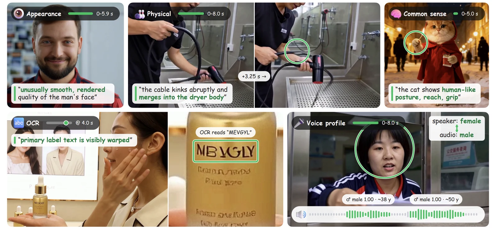
WeVisForensics: Self-Evolving Agent for Omni AI-Generated Video Detection
TL;DR: WeVisForensics is an agentic framework for AI-generated video detection that coordinates self-evolving forensic inspectors across visual and audio cues, grounding its verdicts in localized evidence.
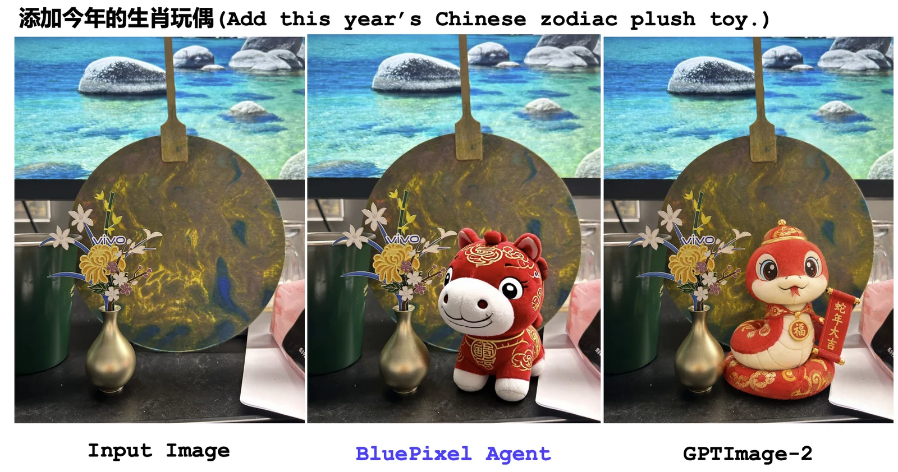
BluePixel: Toward Native 4K Agentic Image Editing
TL;DR: BluePixel couples a native-4K image editing model with an agent that decomposes instructions, coordinates specialist editing tools, and verifies results for controllable high-resolution image editing.
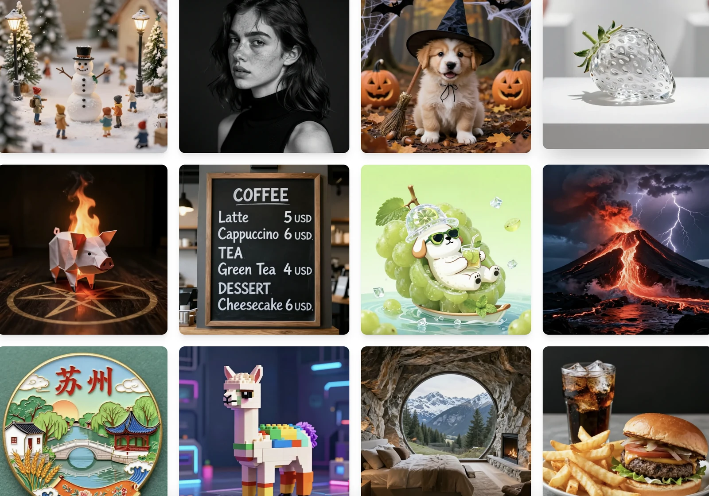
[NeurIPS'26 Spotlight] L2P: UNLOCKING LATENT POTENTIAL FOR PIXEL GENERATION
arXiv | DiP (CVPR 2026) | Website
TL;DR: L2P proposes a Latent-to-Pixel transfer paradigm that migrates massive latent priors to pixel space with just 8 GPUs, achieving 4K generation speedup from 51.14s to 1.19s (97.7% acceleration) while reaching 86% on DPG-Bench.
[ICML'26] LUVE: Latent-Cascaded Ultra-High-Resolution Video Generation with Dual Frequency Experts
TL;DR: LUVE is a novel framework for ultra-high-resolution video generation with latent-cascaded architecture and dual frequency experts.
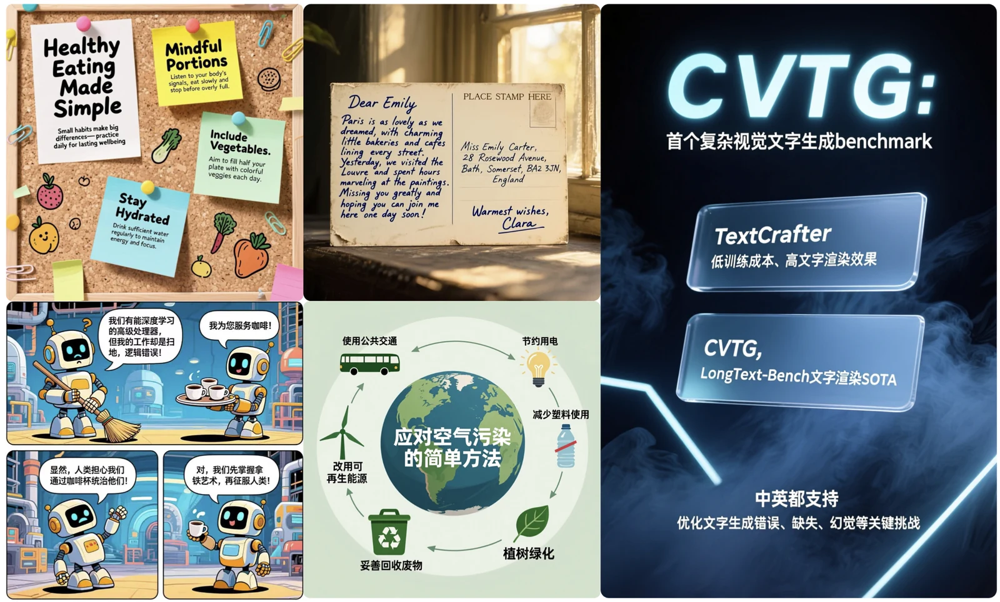
Investigating Text Insulation and Attention Mechanisms for Complex Visual Text Generation
TL;DR: TextCrafter enables precise complex visual text rendering, achieving 0.9400 (Word Acc.) and 0.9757 (NED) on CVTG-2K, 0.976 (Avg) on LongText-Bench, 0.88 (Overall) on Geneval.
We propose Bottleneck-aware Constrained Reinforcement Learning for Multi-text Insulation to improve text-rendering performance on the strong Qwen-Image pretrained model without introducing additional parameters.
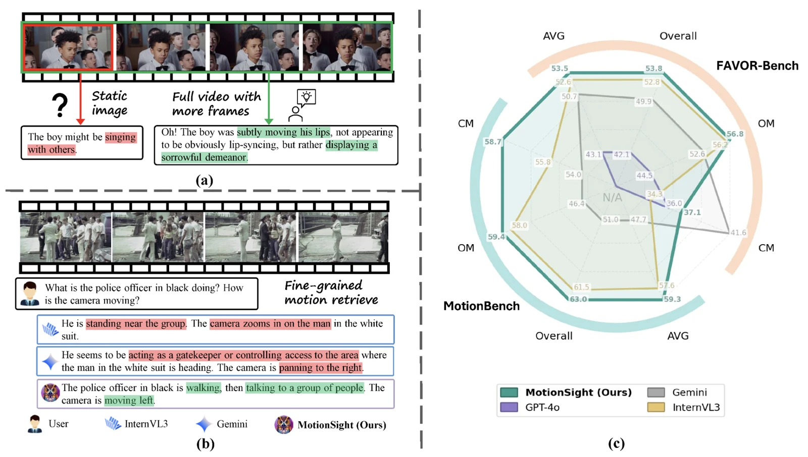
[ICLR'26] MotionSight: Boosting Fine-Grained Motion Understanding in Multimodal LLMs
Website | arXiv | Dataset | Code
TL;DR: MotionSight is a cutting-edge framework for fine-grained motion understanding, better than GPT-4o, Gemini 2.0 and InternVL3.
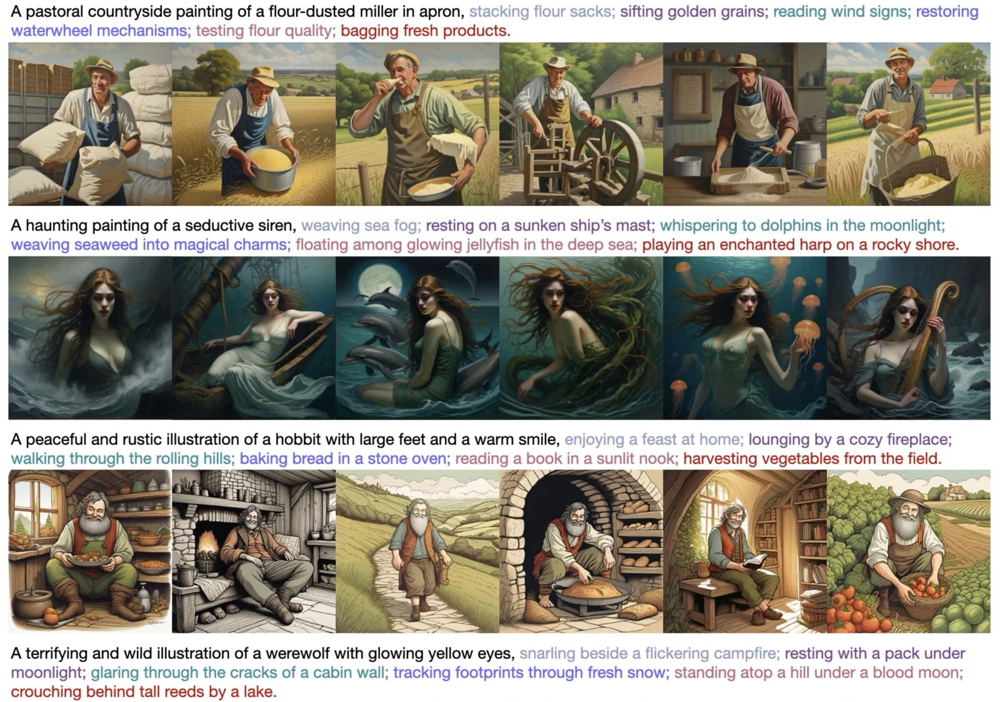
[ICLR'26] CoDi:Subject-Consistent and Pose-Diverse Text-to-Image Generation
TL;DR: CoDi is a cutting-edge framework for subject-consistent generation, achieving strong ID consistency while preserving diverse poses.
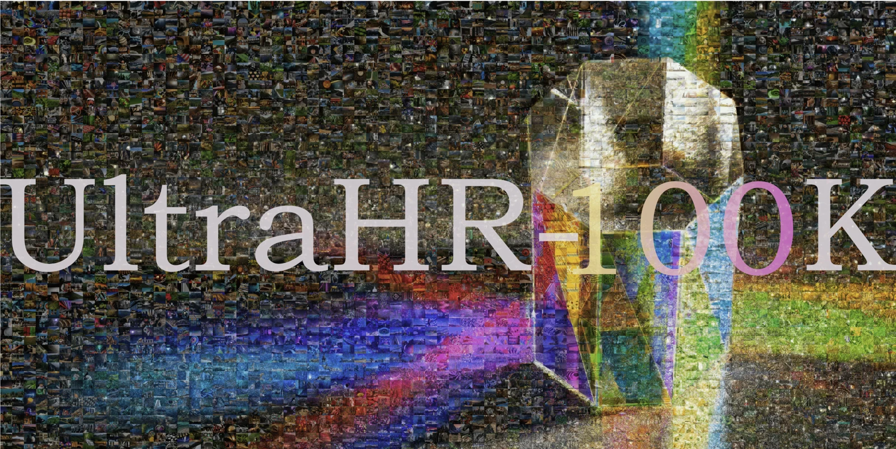
[NeurIPS'25] UltraHR-100K: Enhancing UHR Image Synthesis with A Large-Scale High-Quality Dataset
TL;DR: UltraHR-100K a high-quality dataset of 100K Ultra High Resollution images with rich captions, offering diverse content and strong visual fidelity.
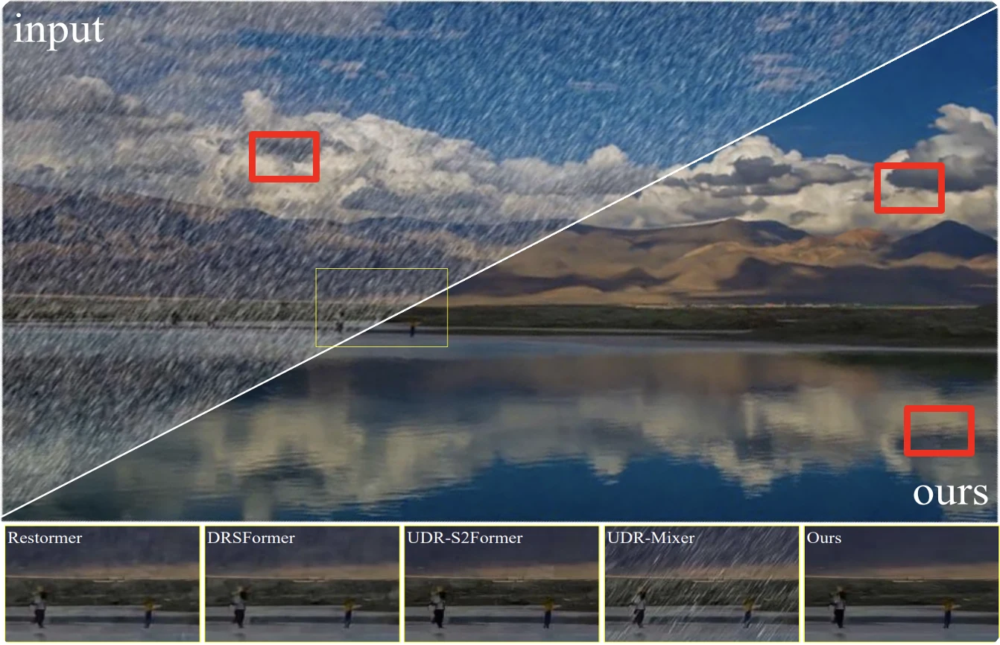
arXiv (TPAMI version) | arXiv (CVPR version) | Code
TL;DR: ERR (CVPR) & ERR++ (TPAMI) deconstruct the complex UHD IR problem into three progressive stages: zero-frequency enhancement, low-frequency restoration, and high-frequency refinement, respectively.
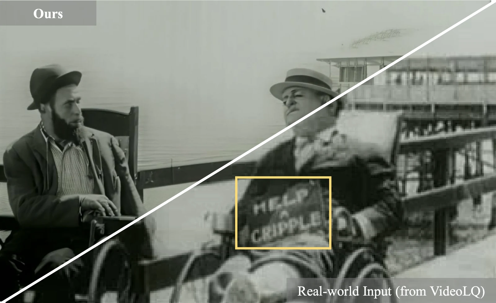
Website | arXiv | Daily paper on HF (#1 of the day) | Demo | Code
TL;DR: STAR is a real-world video SR framework using powerful T2V prior, including CogVideoX-5B and I2VGen-XL model.
[ICCV'25] Region-Aware Text-to-Image Generation via Hard Binding and Soft Refinement
arXiv | Daily paper on HF (#2 of the day) | Demo on Hugging Face | Code
TL;DR: RAG is a tuning-free Regional-Aware text-to-image Generation framework on top of DiT-based model (FLUX.1-dev), with two novel components, Regional Hard Binding and Regional Soft Refinement, for precise and harmonious regional control.
RAG has been demonstrated to outperform Flux-1.dev (current top t2i model), SD3 (ICML'24) and RPG (ICML'24) in complex compositional generation, excelling in aesthetics, text-image alignment, and precise control.
Repainting Capability of RAG: Modify specific regions without affecting others.
RAG can be easily incorperated with the acceleration method Hyper-Flux and various other Lora models.
Prompt: "On the left, Einstein is painting the Mona Lisa; in the center, Elon Reeve Musk is participating in the U.S. presidential election; on the right, Trump is hosting a Tesla product launch"
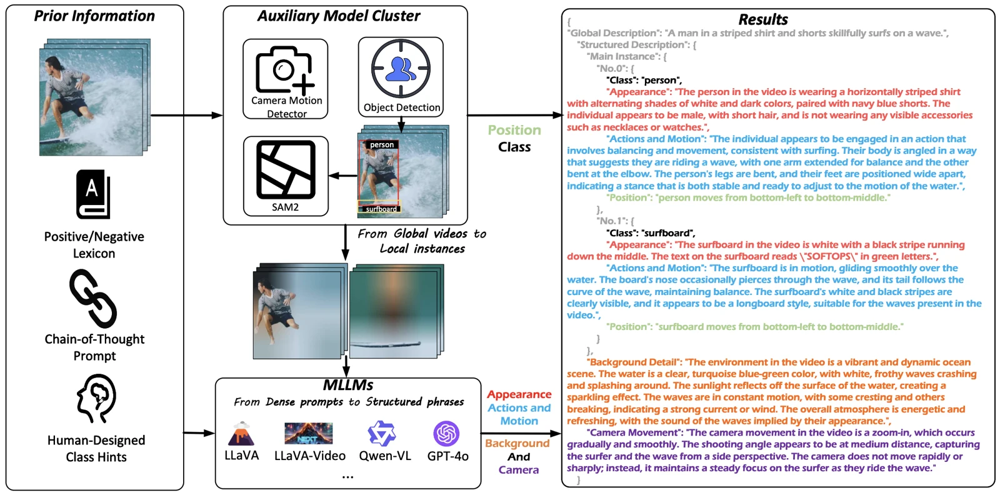
[CVPR'25] InstanceCap: Improving Text-to-Video Generation via Instance-aware Structured Caption
arXiv | InstanceVid | Code
TL;DR: InstanceCap is an instance-aware structured video captioner designed to enhance the generation performance of text-to-video models through high-quality captions.
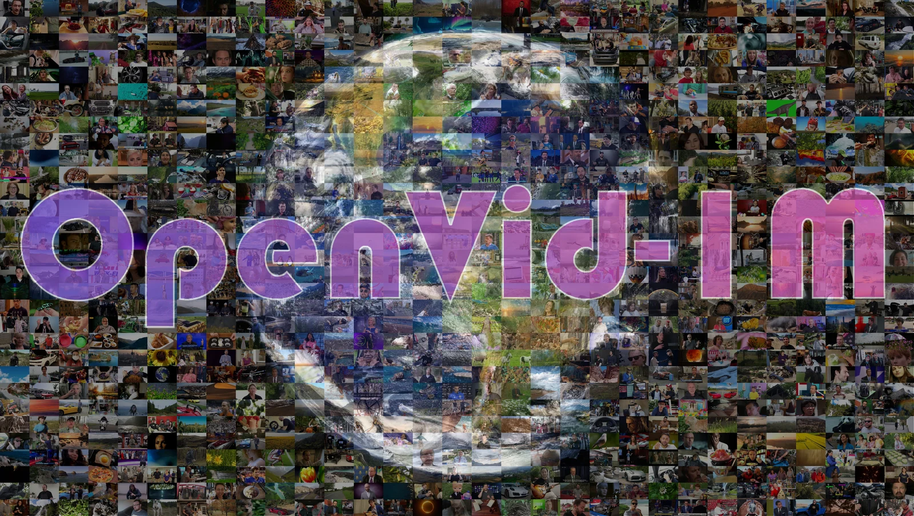
[ICLR'25] OpenVid-1M: A Large-Scale Dataset for High-Quality Text-to-Video Generation
Dataset | arXiv | Daily paper on HF (#2 of the day) | Code | Models | Demo (High-res)
TL;DR: OpenVid-1M is a high-quality text-to-video dataset designed for research institutions to enhance video quality, featuring high aesthetics, clarity, and resolution. It can be used for direct training or as a quality tuning complement to other video datasets. It can also be used in other video generation task (video super-resolution, frame interpolation, etc)
We carefully curate 1 million high-quality video clips with expressive captions to advance text-to-video research, in which 0.4 million videos are in 1080P resolution (termed OpenVidHD-0.4M) .
OpenVid-1M is cited, discussed or used in several recent works, including video diffusion models MarDini, Allegro, T2V-Turbo-V2, Pyramid Flow, SnapGen-V; long video generation model with AR model ARLON; visual understanding and generation model VILA-U; 3D/4D generation models GenXD, DimentionX; video VAE model IV-VAE; Frame interpolation model Framer and large multimodal model InternVL 2.5.
OpenVid-1M dataset was downloaded over 79,000 times on Huggingface last month, placing it in the top 1% of all video datasets (as of Nov. 2024).
Past Projects on Generative AI
High fidelity face generation: Video face fusion (腾讯云-视频人脸融合)
Virtual digital human: AI digital human (腾讯云智能-数智人)
Potrait segmentation: Virtual background in Tencent Meeting (腾讯会议-虚拟背景)